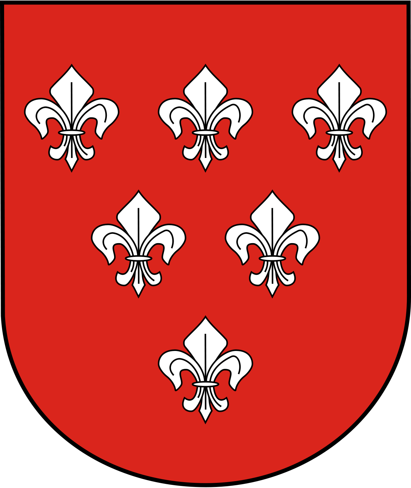
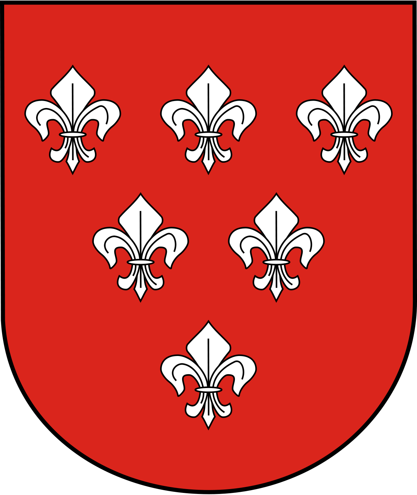

Kościół Matki Bożej Bolesnej
W marcu 1892 r. do Nysy przybyli pierwsi zakonnicy z nowo powstałego zakonu werbistów, którzy zamierzali utworzyć na terenie zakupionego przez siebie majątku w Górnej Wsi założyć pierwszy na terenie Niemiec dom misyjny. Wyboru lokalizacji nowego kościoła i klasztoru dokonał jego założyciel – Arnold Janssen, który uczynił to pod wpływem inspiracji Państwa Huch. Kościół został wybudowany w 1907 r. w stylu neogotyckim. W ciągu kilkunastu lat udało im się wybudować obszerny klasztor oraz szkołę (prywatne gimnazjum) tzw. Święty Krzyż, na terenie ówczesnej parafii św. Jana Chrzciciela w Średniej Wsi. W 1941 r. na bazie tego zgromadzenia kard. Adolf Bertram utworzył nową parafię, która obejmowała Górną Wieś. Dekretem biskupa opolskiego Franciszka Jopa z 1979 r. parafia została poszerzona o 13 ulic z parafii św. Jakuba.